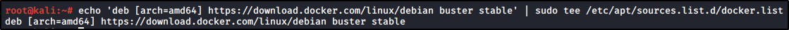

Installing OWASP Juice Shop
https://medium.com/@airman604/installing-docker-in-kali-linux-2017-1-fbaa4d1447fe
To get started, we need to install Docker on Kali Linux.
Add Docker PGP key:
Configure Docker APT repository
(Kali is based on Debian testing, which will be called buster upon release, and Docker now has support for it):

Update Kali:
Install Docker:
While installing, download the Juice Shop from OWASP:
https://github.com/bkimminich/juice-shop
And follow the Docker installation:
We can look for the challenges and solution here, expecially for OWASP Top 10:
https://bkimminich.gitbooks.io/pwning-owasp-juice-shop/content/appendix/solutions.html